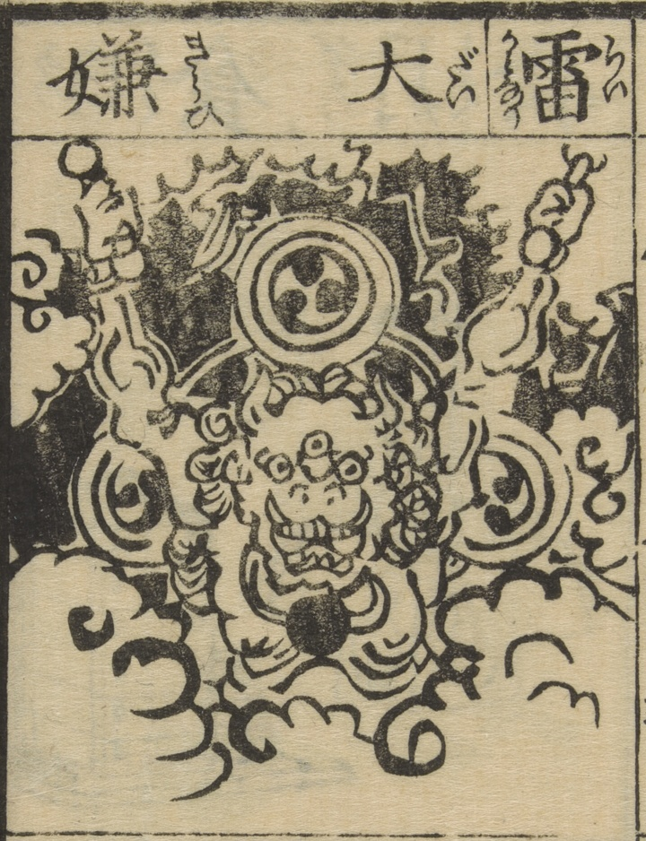

雷；カミナリ，雷様；カミナリサマ

2本の角と牙をもつ雷様。雷太鼓を背負い、手に撥を持つ。
著作者：万亭応賀著，河鍋暁斎画／出典：親書誌：U426_nichibunken_0457：和談三才図笑；ワダンサンサイズエ／日付：2025／資源識別子：U426_nichibunken_0457_0001_0000
Copyright (c)2010- International Research Center for Japanese Studies, Kyoto, Japan. All rights reserved.